Android-Fresco详细学习
Android Fresco网络图片加载库
Fresco是Facebook最新推出的一款用于Android应用中展示图片的强大图片库，可以从网络、本地存储和本地资源中加载图片。相对于ImageLoader，拥有更快的图片下载速度以及可以加载和显示gif图等诸多优势，是个很好的图片框架。
github地址： https://github.com/facebook/fresco
基本的用法：
- 导入 Android Studio 或者 Gradle
dependencies {
compile 'com.facebook.fresco:fresco:0.9.0+'
}
- 在xml中引入SimpleDraweeView
<com.facebook.drawee.view.SimpleDraweeView
android:id="@+id/image_view"
android:layout_width="20dp"
android:layout_height="20dp"
fresco:placeholderImage="@drawable/my_drawable"
/>
注意：1、在SimpleDraweeView的父控件或者根节点中配置xmlns:fresco="http://schemas.android.com/apk/res-auto";
3. 配置网络权限
4. 在Java代码中开始加载图片
Uri uri = Uri.parse("https://raw.githubusercontent.com/facebook/fresco/gh-pages/static/fresco-logo.png");
SimpleDraweeView draweeView = (SimpleDraweeView) findViewById(R.id.my_image_view);
draweeView.setImageURI(uri);
URIs的使用
| 类型 | Scheme | 示例 |
|---|---|---|
| 远程图片 | http:// 和 https:// | HttpURLConnection 或者参考 使用其他网络加载方案 |
| 本地文件 | file:// | FileInputStream |
| Content Provider | content:// | ContentResolver |
| asset目录下的资源 | asset:// | AssetManager |
| res目录下的资源 | res:// | Resources.openRawResource |
res 示例:Uri uri = Uri.parse("res://包名(实际可以是任何字符串甚至留空)/" + R.drawable.ic_launcher);
注意：Fresco 不支持 相对路径的URI. 所有的URI都必须是绝对路径，并且带上该URI的scheme。
在XML中使用SimpleDraweeView
<com.facebook.drawee.view.SimpleDraweeView
android:id="@+id/my_image_view"
android:layout_width="20dp"
android:layout_height="20dp"
fresco:fadeDuration="300" // 淡入淡出的持续时间
fresco:actualImageScaleType="focusCrop" // 实际图像的缩放类型
fresco:placeholderImage="@color/wait_color" //占位图
fresco:placeholderImageScaleType="fitCenter" //占位图的缩放类型
fresco:failureImage="@drawable/error" //下载失败显示的图片
fresco:failureImageScaleType="centerInside" //失败图的缩放类型
fresco:retryImage="@drawable/retrying" //图片加载失败时显示，提示用户点击重新加载，重复加载4次还是没有加载出来的时候才会显示failureImage的图片
fresco:retryImageScaleType="centerCrop" //重新加载的图片缩放类型
fresco:progressBarImage="@drawable/progress_bar" //进度条图片
fresco:progressBarImageScaleType="centerInside"
fresco:progressBarAutoRotateInterval="1000" //进度图自动旋转间隔时间(单位：毫秒ms)
fresco:backgroundImage="@color/blue" //背景图片，这里的背景图片首先被绘制
fresco:overlayImage="@drawable/watermark" // 设置叠加图，在xml中只能设置一张叠加图片，如果需要多张图片的话，需要在java代码中设置哦
fresco:pressedStateOverlayImage="@color/red" // 设置点击状态下的叠加图
fresco:roundAsCircle="false" //设置为圆形图
fresco:roundedCornerRadius="1dp" // 圆角半径
fresco:roundTopLeft="true" // 左上角是否为圆角
fresco:roundTopRight="false"
fresco:roundBottomLeft="false"
fresco:roundBottomRight="true"
fresco:roundWithOverlayColor="@color/corner_color"
fresco:roundingBorderWidth="2dp" //边框的宽度
fresco:roundingBorderColor="@color/border_color" //边框颜色
/>
说明：必须声明 android:layout_width 和 android:layout_height，否则将无法正确加载图像，另外不支持 wrap_content 属性，但也有例外的时候，如果想固定控件的宽高比，则可以使用wrap_content,并通过在xml代码中设置fresco:viewAspectRatio="小数"或者在Java代码中设置mSimpleDraweeView.setAspectRatio(1.33f);即可。
| 类型 | 描述 |
|---|---|
| center | 居中，无缩放 |
| centerCrop | 保持宽高比缩小或放大，是的两边都大于或等于边界，且宽和高契合显示边界，居中显示 |
| focusCrop | 同centerCrop，但居中点不是中点，而是指定的某个点 |
| centerInside | 缩放图片使两边都在显示边界内，居中显示。和fitCenter不同，不会对图片进行放大。如果尺寸大于显示边界，则保持宽高比例缩小图片。 |
| fitCenter | 保持宽高比，缩小或者放大，使得图片完全显示在显示边界内，且宽或高契合显示边界，居中显示。 |
| fitStart | 同上，但不居中，和显示边界左上对齐。 |
| fitEnd | 同fitCenter，但不居中，和显示边界右下对齐。 |
| fitXY | 不保存宽高比，填充满显示边界。 |
| none | 如果要使用tile mode显示，则需要设置为none |
在Java中自定义显示图
一般情况下，在XML设置显示效果即可, 如果想更多定制化，可以这样:
创建一个 builder 然后设置给 SimpleDraweeView:
List<Drawable> backgroundsList;
List<Drawable> overlaysList;
GenericDraweeHierarchyBuilder builder =
new GenericDraweeHierarchyBuilder(getResources());
GenericDraweeHierarchy hierarchy = builder
.setFadeDuration(300)
.setPlaceholderImage(new MyCustomDrawable())
.setBackgrounds(backgroundList)
.setOverlays(overlaysList)
.build();
mSimpleDraweeView.setHierarchy(hierarchy);
注意：请不要多次调用setHierarchy，即使这个View是可回收的。创建 DraweeHierarchy 的较为耗时的一个过程，应该多次利用。
修改 DraweeHierarchy
DraweeHierarchy 的一些属性可以在运行时改变。
要改变这些属性，首先获取一个引用:
GenericDraweeHierarchy hierarchy = mSimpleDraweeView.getHierarchy();
修改占位图
修改占位图为资源id:hierarchy.setPlaceholderImage(R.drawable.placeholderId);
或者修改为一个 Drawable:Drawable drawable;
hierarchy.setPlaceholderImage(drawable);
改变图像的显示
修改缩放类型:
hierarchy.setActualImageScaleType(ScalingUtils.ScaleType.CENTER_INSIDE);
如果你选择缩放类型为 focusCrop，需要指定一个居中点:hierarchy.setActualImageFocusPoint(point);
你可以为图像添加一个 color filter:
ColorFilter filter;
// 创建filter
hierarchy.setActualImageColorFilter(filter);
圆角
除了圆角显示方式（原来为圆角的不能修改为圆圈，反之亦然），其他圆角相关的呈现参数, 具体参见这里 是可以动态修改的。
如下: 获取DraweeHierarchy的圆角显示参数，修改圆角半径为10。
RoundingParams roundingParams = hierarchy.getRoundingParams();
roundingParams.setCornersRadius(10);
hierarchy.setRoundingParams(roundingParams);


Android-ViewPager详细学习
简介
ViewPager是android扩展包v4包中的类，这个类可以让用户左右切换当前的view
- ViewPager类直接继承了ViewGroup类，所有它是一个容器类，可以在其中添加其他的view类。
- ViewPager类需要一个PagerAdapter适配器类给它提供数据。
- ViewPager经常和Fragment一起使用，并且提供了专门的FragmentPagerAdapter和FragmentStatePagerAdapter类供Fragment中的ViewPager使用。
ViewPager的适配器
简介中提到了PagerAdapter，和ListView等控件使用一样,需要ViewPager设置PagerAdapter来完成页面和数据的绑定，这个PagerAdapter是一个基类适配器，我们经常用它来实现app引导图，它的子类有FragmentPagerAdapter和FragmentStatePagerAdapter,这两个子类适配器用于和Fragment一起使用，在安卓应用中它们就像listview一样出现的频繁。
实现一个最基本的PagerAdapter,必须实现四个方法，在代码里有注释
public class AdapterViewpager extends PagerAdapter {
private List<View> mViewList;
public AdapterViewpager(List<View> mViewList) {
this.mViewList = mViewList;
}
@Override
public int getCount() {//必须实现,返回要滑动的VIew的个数
return mViewList.size();
}
@Override
public boolean isViewFromObject(View view, Object object) {//必须实现,该函数用来判断instantiateItem(ViewGroup, int)函数所返回来的Key与一个页面视图是否是代表的同一个视图(即它俩是否是对应的，对应的表示同一个View)
return view == object;
}
@Override
public Object instantiateItem(ViewGroup container, int position) {//必须实现，做了两件事，第一：将当前视图添加到container中，第二：返回当前View
container.addView(mViewList.get(position));
return mViewList.get(position);
}
@Override
public void destroyItem(ViewGroup container, int position, Object object) {//必须实现，从当前container中删除指定位置（position）的View
container.removeView(mViewList.get(position));
}
}
实现一个最基本的FragmentPagerAdapter
public class AdapterFragment extends FragmentPagerAdapter {
private List<Fragment> mFragments;
public AdapterFragment(FragmentManager fm, List<Fragment> mFragments) {
super(fm);
this.mFragments = mFragments;
}
@Override
public Fragment getItem(int position) {//必须实现
return mFragments.get(position);
}
@Override
public int getCount() {//必须实现
return mFragments.size();
}
@Override
public CharSequence getPageTitle(int position) {//选择性实现
return mFragments.get(position).getClass().getSimpleName();
}
}
PagerAdapter是基类适配器是一个通用的ViewPager适配器，相比PagerAdapter，FragmentPagerAdapter和FragmentStatePagerAdapter更专注于每一页是Fragment的情况，而这两个子类适配器使用情况也是有区别的。FragmentPagerAdapter适用于页面比较少的情况，FragmentStatePagerAdapter适用于页面比较多的情况。为什么？简单分析下两个适配器的源码就可以知道了。
源码略，查官网
从源码中我们可以看出FragmentStatePagerAdapter中fragment实例在destroyItem的时候被真正释放，所以FragmentStatePagerAdapter省内存。FragmentPagerAdapter中的fragment实例在destroyItem的时候并没有真正释放fragment对象只是detach，所以FragmentPagerAdapter消耗更多的内存，带来的好处就是效率更高一些。所以得出这样的结论：FragmentPagerAdapter适用于页面比较少的情况，FragmentStatePagerAdapter适用于页面比较多的情况，因此不同的场合选择合适的适配器才是正确的做法。
ViewPager的翻页动画
为ViewPager设置适配器后，就可以正常使用了，接下来我们为ViewPager增加翻页动画，毕竟人的审美会疲劳，加上一些动画交互会提高不少逼格~~，ViewPager提供了PageTransformer接口用于实现翻页动画。官方提供了PageTransformer的实现例子。
例一
public class DepthPageTransformer implements ViewPager.PageTransformer {
private static final float MIN_SCALE = 0.75f;
public void transformPage(View view, float position) {
Log.d("DepthPageTransformer", view.getTag() + " , " + position + "");
int pageWidth = view.getWidth();
if (position < -1) { // [-Infinity,-1)
// This page is way off-screen to the left.
view.setAlpha(0);
} else if (position <= 0) { // [-1,0]
// Use the default slide transition when moving to the left page
view.setAlpha(1);
view.setTranslationX(0);
view.setScaleX(1);
view.setScaleY(1);
} else if (position <= 1) { // (0,1]
// Fade the page out.
view.setAlpha(1 - position);
// Counteract the default slide transition
view.setTranslationX(pageWidth * -position);
// Scale the page down (between MIN_SCALE and 1)
float scaleFactor = MIN_SCALE
+ (1 - MIN_SCALE) * (1 - Math.abs(position));
view.setScaleX(scaleFactor);
view.setScaleY(scaleFactor);
} else { // (1,+Infinity]
// This page is way off-screen to the right.
view.setAlpha(0);
}
}
}
例二
public class ZoomOutPageTransformer implements ViewPager.PageTransformer {
private static final float MIN_SCALE = 0.85f;
private static final float MIN_ALPHA = 0.5f;
@SuppressLint("NewApi")
public void transformPage(View view, float position) {
int pageWidth = view.getWidth();
int pageHeight = view.getHeight();
Log.e("TAG", view + " , " + position + "");
if (position < -1) { // [-Infinity,-1)
// This page is way off-screen to the left.
view.setAlpha(0);
} else if (position <= 1)
{ // [-1,1]
// Modify the default slide transition to shrink the page as well
float scaleFactor = Math.max(MIN_SCALE, 1 - Math.abs(position));
float vertMargin = pageHeight * (1 - scaleFactor) / 2;
float horzMargin = pageWidth * (1 - scaleFactor) / 2;
if (position < 0) {
view.setTranslationX(horzMargin - vertMargin / 2);
} else {
view.setTranslationX(-horzMargin + vertMargin / 2);
}
// Scale the page down (between MIN_SCALE and 1)
view.setScaleX(scaleFactor);
view.setScaleY(scaleFactor);
// Fade the page relative to its size.
view.setAlpha(MIN_ALPHA + (scaleFactor - MIN_SCALE)
/ (1 - MIN_SCALE) * (1 - MIN_ALPHA));
} else { // (1,+Infinity]
// This page is way off-screen to the right.
view.setAlpha(0);
}
}
}
实现翻页动画的关键就是重写transformPage方法，方法里有两个参数view和position,理解这两个参数非常重要。假设有三个页面view1，view2，view3从左至右在viewPager中显示
- 往左滑动时：view1，view2，view3的position都是不断变小的。
view1的position: 0 → -1 → 负无穷大
view2的position: 1 → 0 → -1
view3的position: 1 → 0
- 往右滑动时：view1，view2，view3的position都是不断变大的。
view1的position: -1 → 0
view2的position: -1 → 0 → 1
view3的position: 0 → 1→ 正无穷大
当position是正负无穷大时view就离开屏幕视野了。因此最核心的控制逻辑是在[-1,0]和(0,1]这两个区间，通过设置透明度，平移，旋转，缩放等动画组合可以实现各式各样的页面变化效果。
简化ViewPager的使用
- PagerAdapter简化
public class QuickPageAdapter<T extends View> extends PagerAdapter {
private List<T> mList;
public QuickPageAdapter(List<T> mList) {
this.mList = mList;
}
@Override
public int getCount() {
return mList.size();
}
@Override
public boolean isViewFromObject(View view, Object object) {
return object == view;
}
@Override
public Object instantiateItem(ViewGroup container, int position) {
container.addView(mList.get(position));
return mList.get(position);
}
@Override
public void destroyItem(ViewGroup container, int position, Object object) {
container.removeView(mList.get(position));
}
}
使用它，这样不用每次都写个适配器List
- FragmentPagerAdapter简化
public class QuickFragmentPageAdapter<T extends Fragment> extends FragmentPagerAdapter {
private List<T> mList;
private String[] mStrings;
/**
* @param fm
* @param list
* @param titles PageTitles
*/
public QuickFragmentPageAdapter(FragmentManager fm, List<T> list, String[] titles) {
super(fm);
mList = list;
mStrings = titles;
}
@Override
public Fragment getItem(int position) {
return mList.get(position);
}
@Override
public int getCount() {
return mList.size();
}
@Override
public CharSequence getPageTitle(int position) {
return mStrings == null ? super.getPageTitle(position) : mStrings[position];
}
}
PagerTitleStrip
- 将它作为子控件添加在xml布局文件中的ViewPager中
- 标题的获取，是重写适配器的getPageTitle(int)函数来获取的。
重写CharSequence getPageTitle(int)函数来对其进行实现
PagerTabStrip
- PagerTabStrip在当前页面下，会有一个下划线条来提示当前页面的Tab是哪个。
- PagerTabStrip的Tab是可以点击的，当用户点击某一个Tab时，当前页面就会跳转到这个页面，而PagerTitleStrip则没这个功能。
- 将它作为子控件添加在xml布局文件中的ViewPager中
- 标题的获取，是重写适配器的getPageTitle(int)函数来获取的。
扩展：PagerTabStrip属性更改
setTabIndicatorColorResource——修改Tab颜色
重写适配器CharSequence getPageTitle(int)方法——添加标题
总结PagerTitleStrip和PagerTabStrip
通过前面的讲解，我们应该清楚的认识到PagerTabStrip与PagerTitleStrip在添加标题栏的异同，但他们实现的标题栏效果很不好，不能指定一个页面一次显示一个，或者全部显示，而且标题还滑动。所以注定主流的App都没有用这个玩意的。所以这里也只是一个过渡，在开发中，我们也不建议使用这两个东东。
SimpleOnPageChangeListener
如果不想继承实现ViewPager.OnPageChangeListener的方法，可以直接继承SimpleOnPageChangeListener对ViewPager的页面滑动事件进行简单的处理。
-
onPageScrolled] (int position, float positionOffset, int positionOffsetPixels)：
- position:当前的位置
- positionoffset:当前滚动比例（左－右／0-1）（右－左／1-0）
- positionOffsetPixels：当前实际滚动的像素（左－右／0-页宽） （右－左／页宽－0）
被调用的场景： ViewPager滚动时总被回调，这个函数在操作ViewPager时被回调很多次。
-
手指拖动 action_move 。n次
-
惯性还原 computeScroll()。n次
使用场景：做view的动画效果时可以用这个回调函数。 -
onPageSelected(int position)
被调用的场景：ViewPager确定页面是哪一页时。1次 -
手指拖动后抬起 action_up 。1次
-
或者手指滑动超出屏幕时 action_cancel。1次
使用场景：页面切换后改变对应的tab的状态可以用这个回调函数。 -
onPageScrollStateChange (int state):
被调用的场景：ViewPager状态切换时被调用。这个函数在操作ViewPager时被回调3次。- 开始滚动 dragging拖动状态。1次
- 惯性滚动 settling还原状态。1次
- 滚动结束 idle空闲状态。1次
使用场景：做页面状态变化后引起的view特效时可以用这个回调函数
ViewPager.OnPageChangeListener
onPageScrollStateChanged(int state)//在状态改变的时候调用其中arg0这个参数有三种状态（0，1，2）。arg0 ==1表示正在滑动，arg0==2表示滑动完毕了，arg0==0表示什么都没做。当页面开始滑动的时候，三种状态的变化顺序为(1,2,0)onPageScrolled(int position, float positionOffset, int positionOffsetPixels)//当页面在滑动的时候会调用此方法，在滑动被停止之前，此方法回一直得到调用。其中三个参数的含义分别为：arg0 :当前页面，及你点击滑动的页面。arg1:当前页面偏移的百分比。arg2:当前页面偏移的像素位置onPageSelected(int position)//页面跳转完后得到调用，arg0是你当前选中的页面的position
ViewPager.OnAdapterChangeListener
void onAdapterChanged ( ViewPagerew viewPager, PagerAdapter oldAdapter,PagerAdapter newAdapter)
- viewPager: ViewPager where the adapter change has happened(传入发生改变的ViewPager)
- oldAdapter: the previously set adapter(老的adapter)
- newAdapter: the newly set adapter(新的adapter)
注意点
mViewPager.setOffscreenPageLimit()//这个方法是用来控制fragment不重新走生命周期的个数的，打个比方一共4个fragment页面，如果mViewPager.setOffscreenPageLimit(3)，那么所有的fragment都只走一次生命周期，如果是mViewPager.setOffscreenPageLimit(2)，那么其中有一个fragment会在切换的时候重新走一遍生命周期，FragmentStatePagerAdapter和FragmentPagerAdapter都是这样，但是FragmentPagerAdapter设置setOffscreenPageLimit()不影响fragment缓存的个数,而FragmentStatePagerAdapter缓存的fragment实例个数就是setOffscreenPageLimit()设置的值+1。另外setOffscreenPageLimit()的缺省值是1，设置0是无效的会被强制赋值成1。
提高
ViewPager结合第三方库实现小圆点指示器效果
https://github.com/ongakuer/CircleIndicator
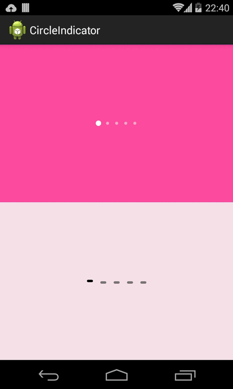
使用看官方文档很简单。
看一下实现思路
public void setViewPager(ViewPager viewPager) {
mViewpager = viewPager;
if (mViewpager != null && mViewpager.getAdapter() != null) {
mLastPosition = -1;
createIndicators();
mViewpager.removeOnPageChangeListener(mInternalPageChangeListener);
mViewpager.addOnPageChangeListener(mInternalPageChangeListener);//绑定上内部实现的PageChangeListener
mInternalPageChangeListener.onPageSelected(mViewpager.getCurrentItem());
}
}
private final OnPageChangeListener mInternalPageChangeListener = new OnPageChangeListener() {
@Override
public void onPageScrolled(int position, float positionOffset, int positionOffsetPixels) {
}
@Override public void onPageSelected(int position) {//这里是动画的核心
if (mViewpager.getAdapter() == null || mViewpager.getAdapter().getCount() <= 0) {
return;
}
if (mAnimatorIn.isRunning()) {
mAnimatorIn.end();
mAnimatorIn.cancel();
}
if (mAnimatorOut.isRunning()) {
mAnimatorOut.end();
mAnimatorOut.cancel();
}
View currentIndicator;
if (mLastPosition >= 0 && (currentIndicator = getChildAt(mLastPosition)) != null) {//页面离开屏幕时指示器动画
currentIndicator.setBackgroundResource(mIndicatorUnselectedBackgroundResId);
mAnimatorIn.setTarget(currentIndicator);
mAnimatorIn.start();
}
View selectedIndicator = getChildAt(position);
if (selectedIndicator != null) {//页面进入屏幕时指示器动画
selectedIndicator.setBackgroundResource(mIndicatorBackgroundResId);
mAnimatorOut.setTarget(selectedIndicator);
mAnimatorOut.start();
}
mLastPosition = position;
}
@Override public void onPageScrollStateChanged(int state) {
}
};
ViewPager结合design库实现tab切换
在design库中有个TabLayout可以为viewPager加上Tab标题头
<?xml version="1.0" encoding="utf-8"?>
<LinearLayout xmlns:android="http://schemas.android.com/apk/res/android"
xmlns:tools="http://schemas.android.com/tools"
android:layout_width="match_parent"
android:layout_height="match_parent"
android:orientation="vertical"
tools:context="com.example.administrator.viewpager.MainActivity">
<android.support.design.widget.TabLayout
android:id="@+id/mTabLayout"
android:layout_width="match_parent"
android:layout_height="wrap_content"></android.support.design.widget.TabLayout>
<android.support.v4.view.ViewPager
android:id="@+id/mViewPager"
android:layout_width="match_parent"
android:layout_height="match_parent"></android.support.v4.view.ViewPager>
</LinearLayout>
mTabLayout.setupWithViewPager(mViewPager);//一行代码完成绑定
更多高级的用法包括tab中添加icon等请转至这里传送门
基于ViewPager实现广告轮播控件
https://github.com/daimajia/AndroidImageSlider
源码分析，省略了部分代码：
public class SliderLayout extends RelativeLayout{
private InfiniteViewPager mViewPager;//这个ViewPager只是修改了setPageTransformer方法去掉了if (Build.VERSION.SDK_INT >= 11) 的限制，结合NineOldDroid库让动画兼容低版本
/**
* InfiniteViewPager adapter.
*/
private SliderAdapter mSliderAdapter;//这个是PagerAdapter
/**
* {@link com.daimajia.slider.library.Tricks.ViewPagerEx} indicator.
*/
private PagerIndicator mIndicator;//页面指示器
/**
* A timer and a TimerTask using to cycle the {@link com.daimajia.slider.library.Tricks.ViewPagerEx}.
*/
private Timer mCycleTimer;//用于轮播的定时器
private TimerTask mCycleTask;
/**
* For resuming the cycle, after user touch or click the {@link com.daimajia.slider.library.Tricks.ViewPagerEx}.
*/
private Timer mResumingTimer;
private TimerTask mResumingTask;
/**
* {@link com.daimajia.slider.library.Tricks.ViewPagerEx} 's transformer
*/
private BaseTransformer mViewPagerTransformer;//PageTransformer的封装用于控制页面翻页效果
public SliderLayout(Context context, AttributeSet attrs, int defStyle) {//核心代码，用于初始化ViewPager
super(context, attrs, defStyle);
mContext = context;
LayoutInflater.from(context).inflate(R.layout.slider_layout, this, true);
final TypedArray attributes = context.getTheme().obtainStyledAttributes(attrs,R.styleable.SliderLayout,
defStyle,0);
mTransformerSpan = attributes.getInteger(R.styleable.SliderLayout_pager_animation_span, 1100);
mTransformerId = attributes.getInt(R.styleable.SliderLayout_pager_animation, Transformer.Default.ordinal());
mAutoCycle = attributes.getBoolean(R.styleable.SliderLayout_auto_cycle,true);
int visibility = attributes.getInt(R.styleable.SliderLayout_indicator_visibility,0);
for(PagerIndicator.IndicatorVisibility v: PagerIndicator.IndicatorVisibility.values()){
if(v.ordinal() == visibility){
mIndicatorVisibility = v;
break;
}
}
mSliderAdapter = new SliderAdapter(mContext);
PagerAdapter wrappedAdapter = new InfinitePagerAdapter(mSliderAdapter);
mViewPager = (InfiniteViewPager)findViewById(R.id.daimajia_slider_viewpager);
mViewPager.setAdapter(wrappedAdapter);
mViewPager.setOnTouchListener(new OnTouchListener() {
@Override
public boolean onTouch(View v, MotionEvent event) {
int action = event.getAction();
switch (action) {
case MotionEvent.ACTION_UP:
recoverCycle();
break;
}
return false;
}
});
attributes.recycle();
setPresetIndicator(PresetIndicators.Center_Bottom);
setPresetTransformer(mTransformerId);
setSliderTransformDuration(mTransformerSpan,null);
setIndicatorVisibility(mIndicatorVisibility);
if(mAutoCycle){
startAutoCycle();
}
}
@Override
public boolean onInterceptTouchEvent(MotionEvent ev) {
int action = ev.getAction();
switch (action) {
case MotionEvent.ACTION_DOWN://手指按下时候暂停轮播
pauseAutoCycle();
break;
}
return false;
}
/**
* preset transformers and their names
*/
public enum Transformer{//PageTransformer枚举
Default("Default"),
Accordion("Accordion"),
Background2Foreground("Background2Foreground"),
CubeIn("CubeIn"),
DepthPage("DepthPage"),
Fade("Fade"),
FlipHorizontal("FlipHorizontal"),
FlipPage("FlipPage"),
Foreground2Background("Foreground2Background"),
RotateDown("RotateDown"),
RotateUp("RotateUp"),
Stack("Stack"),
Tablet("Tablet"),
ZoomIn("ZoomIn"),
ZoomOutSlide("ZoomOutSlide"),
ZoomOut("ZoomOut");
private final String name;
private Transformer(String s){
name = s;
}
public String toString(){
return name;
}
public boolean equals(String other){
return (other == null)? false:name.equals(other);
}
};
}
通过分析我们可以对SliderLayout实现思路小结一下：
- 内部持有一个修改过的ViewPager控件，可以兼容低版本的页面转换动画
- 内部有一个实现了PagerAdapter的SliderAdapter适配器
- 内部持有一个PagerIndicator 页面指示器可供选择
- 维护一个定时任务用于控制轮播
- 对手势事件进行处理暂停轮播，继续轮播
- 提供了很多缺省的PageTransformer方便调用
最后在构造函数中初始化ViewPager。
自定义 ViewPager 打造千变万化的图片切换效果
ViewPager使用时间长了，他的切换效果容易觉得枯燥，形成一种审美疲劳我们需要改变，学习学习改变ViewPager切换时的效果，实现个性化的图片切换

是不是比传统的效果个性很多，嘿嘿其实很简单，学习完这篇博客，保证你可以自定义切换效果，做出各种丧心病狂的切换
制作前的分析
观察下效果图，实际上改变的就是切换时的动画，那么简单了，只需要用户在切换时，拿到当前的View和下一个View，然后添加动画是不是就可以了。好，第一步，获取用户切换时的当前View和切换至的目的View。我们再来看一下，如果获取了当前View和目的View，对于动画我们需要缓慢的变化，最好是根据用户的手势滑动。比如上述效果，用户滑动时，目的图片根据用户滑动距离缓缓出现和慢慢变大。好，第二步，设计动画的梯度变化。
经过分析，我们总结出两个步骤，下面我们开始一步一步来打造~~
获取用户切换时当前View和切换至的目的View。
ViewPager也需要监听用户的手势，所以肯定提供了某个方法。于是纵观ViewPager的方法，发现了一个叫做 onPageScrolled(int position, float positionOffset, int positionOffsetPixels)的方法~~
没错就是这个方法：在页面滚动时调用~
下面仔细研究下这几个参数：
直接说测试结果：
在非第一页与最后一页时，滑动到下一页，position为当前页位置；滑动到上一页：position为当前页-1
positionOffset 滑动到下一页，[0,1)区间上变化；滑动到上一页：(1,0]区间上变化
positionOffsetPixels这个和positionOffset很像：滑动到下一页，[0,宽度)区间上变化；滑动到上一页：(宽度,0]区间上变化
第一页时：滑动到上一页position=0 ，其他基本为0 ；最后一页滑动到下一页 position为当前页位置，其他两个参数为0
豁然发现，我们需要的步骤的第二步解决了，positionOffset很适合作为，渐变，缩放的控制参数；positionOffsetPixels则可以作为平移等的控制参数。
那么如何获得当前View和目的View呢：
分享几个我的歧途：
- 【错误】我通过getChildAt(position)，getChildAt(position+1)，getChildAt(position-1)获得滑动时，左右的两个View；乍一看，还真觉得不错
在代码写出来，再乍效果也出不来错误原因：我们忽略一个特别大的东西，ViewPager的机制，滑动时动态加载和删除View，ViewPager其实只会维持2到3个View，而position的范围基本属于无限~~ - 【错误】我通过getCurrentItem获得当前的位置，然后+1，-1获得后一个或者前一个
正在窃喜，赶快代码改过来，效果怎么也不对，乱七八糟的仔细观察日志，这个getCurrentItem当用户手指离开的屏幕，Page还在动画执行时，就改变了难怪~整个滑动过程并不是固定的唉，心都碎了~ - 【错误】position在整个滑动的过程中是不变化的，而且ViewPager会保存2个或3个View;那么我考虑，如果是第一页、或者最后一页那么我取getChildAt(0)和getChildAt(1)，如果在其他页面则为getChildAt(0),getChildAt(2),然后经过一系列的变化～我想这会总该对了吧，于是我遇到第一问题，第一页的时候，不管左右position都为0，尼玛，这哪个为左View，哪个为右View~~
说了这么多错误，大家可以绕过这些弯路，也能从这些弯路里面看出点什么~
下面说正确的，其实ViewPager在添加一个View或者销毁一个View时，是我们自己的PageAdapter中控制的，于是我们可以在ViewPager里面维系一个HashMap<Position，View>，然后滑动的时候，通过get（position）取出，比如上述效果，始终是右边的View变化，要么从小到大，要么从大到小
那么滑倒下一页：左边的View:map.get(position) ，右边的View : map.get(position+1) .
那么滑倒上一页：左边的View : map.get(position) ， 右边的View : map.get(position+1) ， 一样的，因为滑到上一页，position为当前页-1
好了，至此，我们分析了且解决了所有步骤。
代码
MainActivity
package com.example.zhy_jazzyviewpager;
import android.app.Activity;
import android.os.Bundle;
import android.support.v4.view.PagerAdapter;
import android.view.Menu;
import android.view.View;
import android.view.ViewGroup;
import android.widget.ImageView;
import android.widget.ImageView.ScaleType;
public class MainActivity extends Activity
{
protected static final String TAG = "MainActivity";
private int[] mImgIds;
private MyJazzyViewPager mViewPager;
@Override
protected void onCreate(Bundle savedInstanceState)
{
super.onCreate(savedInstanceState);
setContentView(R.layout.activity_main);
mImgIds = new int[] { R.drawable.a, R.drawable.b, R.drawable.c,
R.drawable.d };
mViewPager = (MyJazzyViewPager) findViewById(R.id.id_viewPager);
mViewPager.setAdapter(new PagerAdapter()
{
@Override
public boolean isViewFromObject(View arg0, Object arg1)
{
return arg0 == arg1;
}
@Override
public void destroyItem(ViewGroup container, int position,
Object object)
{
container.removeView((View) object);
}
@Override
public Object instantiateItem(ViewGroup container, int position)
{
ImageView imageView = new ImageView(MainActivity.this);
imageView.setImageResource(mImgIds[position]);
imageView.setScaleType(ScaleType.CENTER_CROP);
container.addView(imageView);
mViewPager.setObjectForPosition(imageView, position);
return imageView;
}
@Override
public int getCount()
{
return mImgIds.length;
}
});
}
}
这个很常见的代码，就是初始化ViewPager就没啥可说的了有一点需要注意：在instantiateItem方法，我们多调用了一个mViewPager.setObjectForPosition(imageView, position);其实就是为了给我们的Map存值
主要看自定义的ViewPager
package com.example.zhy_jazzyviewpager;
import java.util.HashMap;
import java.util.LinkedHashMap;
import android.content.Context;
import android.support.v4.view.ViewPager;
import android.util.AttributeSet;
import android.util.Log;
import android.view.View;
import com.nineoldandroids.view.ViewHelper;
public class MyJazzyViewPager extends ViewPager
{
private float mTrans;
private float mScale;
/**
* 最大的缩小比例
*/
private static final float SCALE_MAX = 0.5f;
private static final String TAG = "MyJazzyViewPager";
/**
* 保存position与对于的View
*/
private HashMap<Integer, View> mChildrenViews = new LinkedHashMap<Integer, View>();
/**
* 滑动时左边的元素
*/
private View mLeft;
/**
* 滑动时右边的元素
*/
private View mRight;
public MyJazzyViewPager(Context context, AttributeSet attrs)
{
super(context, attrs);
}
@Override
public void onPageScrolled(int position, float positionOffset,
int positionOffsetPixels)
{
// Log.e(TAG, "position=" + position+", positionOffset = "+positionOffset+" ,positionOffsetPixels = " + positionOffsetPixels+" , currentPos = " + getCurrentItem());
//滑动特别小的距离时，我们认为没有动，可有可无的判断
float effectOffset = isSmall(positionOffset) ? 0 : positionOffset;
//获取左边的View
mLeft = findViewFromObject(position);
//获取右边的View
mRight = findViewFromObject(position + 1);
// 添加切换动画效果
animateStack(mLeft, mRight, effectOffset, positionOffsetPixels);
super.onPageScrolled(position, positionOffset, positionOffsetPixels);
}
public void setObjectForPosition(View view, int position)
{
mChildrenViews.put(position, view);
}
/**
* 通过过位置获得对应的View
*
* @param position
* @return
*/
public View findViewFromObject(int position)
{
return mChildrenViews.get(position);
}
private boolean isSmall(float positionOffset)
{
return Math.abs(positionOffset) < 0.0001;
}
protected void animateStack(View left, View right, float effectOffset,
int positionOffsetPixels)
{
if (right != null)
{
/**
* 缩小比例 如果手指从右到左的滑动（切换到后一个）：0.0~1.0，即从一半到最大
* 如果手指从左到右的滑动（切换到前一个）：1.0~0，即从最大到一半
*/
mScale = (1 - SCALE_MAX) * effectOffset + SCALE_MAX;
/**
* x偏移量： 如果手指从右到左的滑动（切换到后一个）：0-720 如果手指从左到右的滑动（切换到前一个）：720-0
*/
mTrans = -getWidth() - getPageMargin() + positionOffsetPixels;
ViewHelper.setScaleX(right, mScale);
ViewHelper.setScaleY(right, mScale);
ViewHelper.setTranslationX(right, mTrans);
}
if (left != null)
{
left.bringToFront();
}
}
}
可以看到，核心代码都是onPageScrolled，我们通过findViewFromObject(position); findViewFromObject(position + 1);分别获取了左右两边的View，然后添加动画效果；当前这个例子添加了两个动画，一个是从0.5放大到1.0或者1.0缩小到0.5，没错由我们的positionOffset提供梯度的变化还有个平移的动画：下一页直接移动到当前屏幕（默认是在右边，可以注释这个效果，怎么运行看看），然后不断的通过positionOffsetPixels抵消原来默认移动时的位移，让用户感觉它就在原地放大缩小
好了，这样就实现了你可以随便写自己喜欢的动画效果，比如在默认上面加个淡入淡出或者神马，随便是不是很随意~~
我们的布局文件：
<RelativeLayout xmlns:android="http://schemas.android.com/apk/res/android"
xmlns:tools="http://schemas.android.com/tools"
android:layout_width="match_parent"
android:layout_height="match_parent"
>
<com.example.zhy_jazzyviewpager.MyJazzyViewPager
android:layout_width="wrap_content"
android:layout_height="wrap_content"
android:id="@+id/id_viewPager" />
</RelativeLayout>
JazzyViewPager的使用
其实上面的实现就是github上JazzyViewPager的源码，用法不用说了，就是我们的MainActivity，它内置了大概10来种效果，我们可以通过代码或者布局上面设置动画效果我们上面的例子效果，它叫做Stack；最后也会贴上JazzyViewPager的源码的下载
使用JazzViewPager的代码：其实基本一样
MainActivity
package com.jfeinstein.jazzyviewpager;
import com.jfeinstein.jazzyviewpager.JazzyViewPager.TransitionEffect;
import android.app.Activity;
import android.os.Bundle;
import android.support.v4.view.PagerAdapter;
import android.view.View;
import android.view.ViewGroup;
import android.widget.ImageView;
import android.widget.ImageView.ScaleType;
public class MainActivity extends Activity
{
protected static final String TAG = "MainActivity";
private int[] mImgIds;
private JazzyViewPager mViewPager;
@Override
protected void onCreate(Bundle savedInstanceState)
{
super.onCreate(savedInstanceState);
setContentView(R.layout.activity_main);
mImgIds = new int[] { R.drawable.a, R.drawable.b, R.drawable.c,
R.drawable.d };
mViewPager = (JazzyViewPager) findViewById(R.id.id_viewPager);
//设置切换效果
mViewPager.setTransitionEffect(TransitionEffect.Stack);
mViewPager.setAdapter(new PagerAdapter()
{
@Override
public boolean isViewFromObject(View arg0, Object arg1)
{
return arg0 == arg1;
}
@Override
public void destroyItem(ViewGroup container, int position,
Object object)
{
container.removeView((View) object);
}
@Override
public Object instantiateItem(ViewGroup container, int position)
{
ImageView imageView = new ImageView(MainActivity.this);
imageView.setImageResource(mImgIds[position]);
imageView.setScaleType(ScaleType.CENTER_CROP);
container.addView(imageView);
mViewPager.setObjectForPosition(imageView, position);
return imageView;
}
@Override
public int getCount()
{
return mImgIds.length;
}
});
}
}
与我们的代码唯一区别就是：
//设置切换效果
mViewPager.setTransitionEffect(TransitionEffect.Stack);
它有12中可选的切换效果，其实就是写了12个切换的动画~~~
好了，最后附上一个我比较喜欢的效果：Tablet
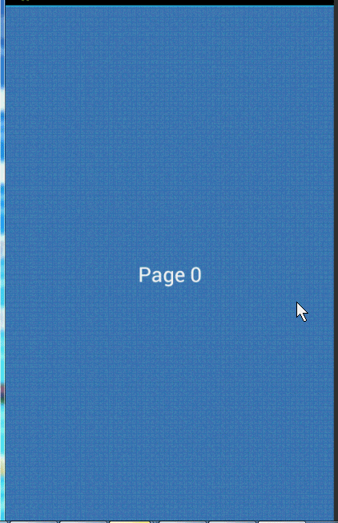
实现个性的ViewPager切换动画 实战PageTransformer（兼容Android3.0以下）
概述
本篇博文，将：
- 介绍如何使用setPageTransformer设置切换动画；
- 自定义PageTransformer实现个性的切换动画；
- 该方法在SDK11以下的版本不起作用，我们会对其做一定修改，让其向下兼容。
官方示例地址：http://developer.Android.com/training/animation/screen-slide.html 有兴趣的可以去看看~~
setPageTransformer的使用
首先我们迅速的实现一个传统的ViewPager效果~
布局文件
<RelativeLayout xmlns:android="http://schemas.android.com/apk/res/android"
xmlns:tools="http://schemas.android.com/tools"
android:layout_width="match_parent"
android:layout_height="match_parent" >
<android.support.v4.view.ViewPager
android:id="@+id/id_viewpager"
android:layout_width="fill_parent"
android:layout_height="fill_parent" />
</RelativeLayout>
MainActivity
package com.zhy.demo_zhy_08_viewpageranim;
import java.util.ArrayList;
import java.util.List;
import android.app.Activity;
import android.os.Bundle;
import android.support.v4.view.PagerAdapter;
import android.support.v4.view.ViewPager;
import android.view.View;
import android.view.ViewGroup;
import android.view.Window;
import android.widget.ImageView;
import android.widget.ImageView.ScaleType;
public class MainActivity extends Activity
{
private ViewPager mViewPager;
private int[] mImgIds = new int[] { R.drawable.guide_image1,
R.drawable.guide_image2, R.drawable.guide_image3 };
private List<ImageView> mImageViews = new ArrayList<ImageView>();
@Override
protected void onCreate(Bundle savedInstanceState)
{
super.onCreate(savedInstanceState);
requestWindowFeature(Window.FEATURE_NO_TITLE);
setContentView(R.layout.activity_main);
initData();
mViewPager = (ViewPager) findViewById(R.id.id_viewpager);
mViewPager.setAdapter(new PagerAdapter()
{
@Override
public Object instantiateItem(ViewGroup container, int position)
{
container.addView(mImageViews.get(position));
return mImageViews.get(position);
}
@Override
public void destroyItem(ViewGroup container, int position,
Object object)
{
container.removeView(mImageViews.get(position));
}
@Override
public boolean isViewFromObject(View view, Object object)
{
return view == object;
}
@Override
public int getCount()
{
return mImgIds.length;
}
});
}
private void initData()
{
for (int imgId : mImgIds)
{
ImageView imageView = new ImageView(getApplicationContext());
imageView.setScaleType(ScaleType.CENTER_CROP);
imageView.setImageResource(imgId);
mImageViews.add(imageView);
}
}
}
好了，这样一个传统ViewPager就实现了大家对上面代码应该不会有任何陌生的感觉~运行效果也不用贴图了，大家肯定知道
PageTransformer
ViewPager有个方法叫做：
setPageTransformer(boolean reverseDrawingOrder, PageTransformer transformer)
用于设置ViewPager切换时的动画效果，并且google官方还给出了两个示例。
只需要在上述代码中调用setPageTransformer即可添加切换动画效果~~下面演示google的两个PageTransformer的代码，以及运行效果。
DepthPageTransformer
public class DepthPageTransformer implements ViewPager.PageTransformer {
private static final float MIN_SCALE = 0.75f;
public void transformPage(View view, float position) {
int pageWidth = view.getWidth();
if (position < -1) { // [-Infinity,-1)
// This page is way off-screen to the left.
view.setAlpha(0);
} else if (position <= 0) { // [-1,0]
// Use the default slide transition when moving to the left page
view.setAlpha(1);
view.setTranslationX(0);
view.setScaleX(1);
view.setScaleY(1);
} else if (position <= 1) { // (0,1]
// Fade the page out.
view.setAlpha(1 - position);
// Counteract the default slide transition
view.setTranslationX(pageWidth * -position);
// Scale the page down (between MIN_SCALE and 1)
float scaleFactor = MIN_SCALE
+ (1 - MIN_SCALE) * (1 - Math.abs(position));
view.setScaleX(scaleFactor);
view.setScaleY(scaleFactor);
} else { // (1,+Infinity]
// This page is way off-screen to the right.
view.setAlpha(0);
}
}
}
调用代码：
mViewPager.setPageTransformer(true, new DepthPageTransformer());
效果：

ZoomOutPageTransformer
package com.zhy.view;
import android.annotation.SuppressLint;
import android.support.v4.view.ViewPager;
import android.util.Log;
import android.view.View;
public class ZoomOutPageTransformer implements ViewPager.PageTransformer
{
private static final float MIN_SCALE = 0.85f;
private static final float MIN_ALPHA = 0.5f;
@SuppressLint("NewApi")
public void transformPage(View view, float position)
{
int pageWidth = view.getWidth();
int pageHeight = view.getHeight();
Log.e("TAG", view + " , " + position + "");
if (position < -1)
{ // [-Infinity,-1)
// This page is way off-screen to the left.
view.setAlpha(0);
} else if (position <= 1) //a页滑动至b页 ； a页从 0.0 -1 ；b页从1 ~ 0.0
{ // [-1,1]
// Modify the default slide transition to shrink the page as well
float scaleFactor = Math.max(MIN_SCALE, 1 - Math.abs(position));
float vertMargin = pageHeight * (1 - scaleFactor) / 2;
float horzMargin = pageWidth * (1 - scaleFactor) / 2;
if (position < 0)
{
view.setTranslationX(horzMargin - vertMargin / 2);
} else
{
view.setTranslationX(-horzMargin + vertMargin / 2);
}
// Scale the page down (between MIN_SCALE and 1)
view.setScaleX(scaleFactor);
view.setScaleY(scaleFactor);
// Fade the page relative to its size.
view.setAlpha(MIN_ALPHA + (scaleFactor - MIN_SCALE)
/ (1 - MIN_SCALE) * (1 - MIN_ALPHA));
} else
{ // (1,+Infinity]
// This page is way off-screen to the right.
view.setAlpha(0);
}
}
}
调用代码：
mViewPager.setPageTransformer(true, new ZoomOutPageTransformer());
效果：

效果图都是google官网上的，我们的测试图会在兼容3.0以下贴出来，不然就重复了~~
为ViewPager添加切换就一行代码是不是很happy，可惜是不兼容3.0以下的版本的，该方法的注释上写到：
setting a PageTransformer prior to Android 3.0 (API 11) will have no effect 在3.0之前的版本设置此方法是没有效果的，那么下面我们就看如何让其兼容3.0以下版本。
版本的向下兼容
不兼容的原因
首先看下为什么不兼容，3.0以下呢？
看上面的两个示例代码，代码中View的动画使用的是属性动画，而属性动画是3.0才推出的，那么这么写肯定是不兼容3.0以下了~
那么我们首先引入nineoldandroids，让动画先能在3.0以下跑再说：
修改DepthPageTransformer
package com.zhy.view;
import com.nineoldandroids.view.ViewHelper;
import android.annotation.SuppressLint;
import android.support.v4.view.ViewPager;
import android.view.View;
public class DepthPageTransformer implements ViewPager.PageTransformer
{
private static final float MIN_SCALE = 0.75f;
public void transformPage(View view, float position)
{
int pageWidth = view.getWidth();
if (position < -1)
{ // [-Infinity,-1)
// This page is way off-screen to the left.
// view.setAlpha(0);
ViewHelper.setAlpha(view, 0);
} else if (position <= 0)// a页滑动至b页 ； a页从 0.0 -1 ；b页从1 ~ 0.0
{ // [-1,0]
// Use the default slide transition when moving to the left page
// view.setAlpha(1);
ViewHelper.setAlpha(view, 1);
// view.setTranslationX(0);
ViewHelper.setTranslationX(view, 0);
// view.setScaleX(1);
ViewHelper.setScaleX(view, 1);
// view.setScaleY(1);
ViewHelper.setScaleY(view, 1);
} else if (position <= 1)
{ // (0,1]
// Fade the page out.
// view.setAlpha(1 - position);
ViewHelper.setAlpha(view, 1 - position);
// Counteract the default slide transition
// view.setTranslationX(pageWidth * -position);
ViewHelper.setTranslationX(view, pageWidth * -position);
// Scale the page down (between MIN_SCALE and 1)
float scaleFactor = MIN_SCALE + (1 - MIN_SCALE) * (1 - position);
// view.setScaleX(scaleFactor);
ViewHelper.setScaleX(view, scaleFactor);
// view.setScaleY(1);
ViewHelper.setScaleY(view, scaleFactor);
} else
{ // (1,+Infinity]
// This page is way off-screen to the right.
// view.setAlpha(0);
ViewHelper.setAlpha(view, 1);
}
}
}
很简单，把所有属性动画换成ViewHelper去设置就好了。现在我们去3.0以下的机子上去运行，发现还是没有效果~~
为什么呢？
我们再去看看setPageTransformer的源码：
public void setPageTransformer(boolean reverseDrawingOrder, PageTransformer transformer) {
if (Build.VERSION.SDK_INT >= 11) {
final boolean hasTransformer = transformer != null;
final boolean needsPopulate = hasTransformer != (mPageTransformer != null);
mPageTransformer = transformer;
setChildrenDrawingOrderEnabledCompat(hasTransformer);
if (hasTransformer) {
mDrawingOrder = reverseDrawingOrder ? DRAW_ORDER_REVERSE : DRAW_ORDER_FORWARD;
} else {
mDrawingOrder = DRAW_ORDER_DEFAULT;
}
if (needsPopulate) populate();
}
}
终于发现原因了，原来在此方法内部判断了如果是11以上的版本才让动画生效~~
那么，没办法了，如果想兼容，必须修改ViewPager的源码了~~
完美向下兼容
我们将ViewPager的源码拷贝一份至我们的项目中，修改名称为ViewPagerCompat；然后注释掉SDK版本判断那一句
public class ViewPagerCompat extends ViewGroup {
public void setPageTransformer(boolean reverseDrawingOrder, ViewPager.PageTransformer transformer) {
// if (Build.VERSION.SDK_INT >= 11)
{
final boolean hasTransformer = transformer != null;
final boolean needsPopulate = hasTransformer != (mPageTransformer != null);
mPageTransformer = transformer;
setChildrenDrawingOrderEnabledCompat(hasTransformer);
if (hasTransformer) {
mDrawingOrder = reverseDrawingOrder ? DRAW_ORDER_REVERSE : DRAW_ORDER_FORWARD;
} else {
mDrawingOrder = DRAW_ORDER_DEFAULT;
}
if (needsPopulate) populate();
}
}
}
注意，所有的PageTransformer使用ViewPager.PageTransformer
然后我们把项目中的ViewPager改为ViewPagerCompat；记得修改布局文件，以及MainActivity中的ViewPager为ViewPagerCompat
我们在2.3.3的模拟器上测试下效果：
可以看到，我们的切换动画完美的运行在2.3.3的机器上so happy 我们强大的创新呢~~下面带领大家分析setPageTransformer方法，然后设计一个个性的动画切换效果没有ViewPager源码的童鞋不要紧，我会在文末的源码下载中加入ViewPager源码，让你可以尽情去测试
当然了，仅仅是兼容当然不能满足我们的好奇心，难道我们做到了兼容，还只能使用Google给的示例动画么
自定义PageTransformer实现个性切换动画
public interface PageTransformer {
/**
* Apply a property transformation to the given page.
*
* @param page Apply the transformation to this page
* @param position Position of page relative to the current front-and-center
* position of the pager. 0 is front and center. 1 is one full
* page position to the right, and -1 is one page position to the left.
*/
public void transformPage(View page, float position);
}
可以看到该接口只有一个方法，第一个是我们的view，第二个是position~~
当我们滑动时：会打印出当然ViewPager中存活的每个View以及它们的position的变化注意是每一个，所以建议别只log position，不然你会觉得莫名其妙的输出
position的可能性的值有，其实从官方示例的注释就能看出：
[-Infinity,-1) 已经看不到了
(1,+Infinity] 已经看不到了
[-1,1]
重点看[-1,1]这个区间 ， 其他两个的View都已经看不到了~~
假设现在ViewPager在A页现在滑出B页，则:
A页的position变化就是( 0, -1]
B页的position变化就是[ 1 , 0 ]
知道了我们滑动时position的变化~~那么就开始设计我们的个性的切换效果；
官方给的例子，有变化透明度、偏移量、缩放的，我们准备来个不一样的，我们变化角度，即rotation;
大概的效果是这样的：
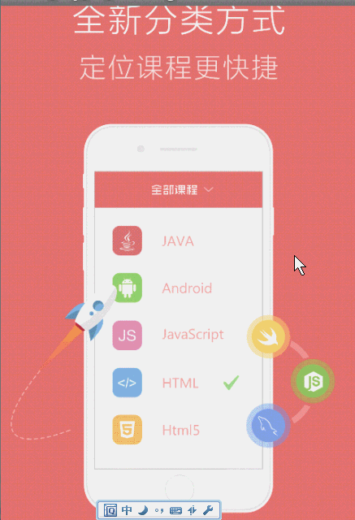
下面我们分析代码：
我们设置View的旋转中心为：
ViewHelper.setPivotX(view, view.getMeasuredWidth() * 0.5f);
ViewHelper.setPivotY(view, view.getMeasuredHeight());
依然是ViewPager在A页现在滑出B页
那么A页应当在滑动过程中0度到-20度的偏移，B页应当在滑动过程中+20度到0度的偏移
结合
A页的position变化就是( 0, -1]
B页的position变化就是[ 1 , 0 ]
那么旋转的角度即：mRot = (20 * position); A页 mRot :0 ,~ -20 ; B页 mRot :20 ~ 0 ;
瞬间觉得好简单：
完整代码：
package com.zhy.view;
import com.nineoldandroids.view.ViewHelper;
import android.annotation.SuppressLint;
import android.support.v4.view.ViewPager;
import android.util.Log;
import android.view.View;
public class RotateDownPageTransformer implements ViewPager.PageTransformer
{
private static final float ROT_MAX = 20.0f;
private float mRot;
public void transformPage(View view, float position)
{
Log.e("TAG", view + " , " + position + "");
if (position < -1)
{ // [-Infinity,-1)
// This page is way off-screen to the left.
ViewHelper.setRotation(view, 0);
} else if (position <= 1) // a页滑动至b页 ； a页从 0.0 ~ -1 ；b页从1 ~ 0.0
{ // [-1,1]
// Modify the default slide transition to shrink the page as well
if (position < 0)
{
mRot = (ROT_MAX * position);
ViewHelper.setPivotX(view, view.getMeasuredWidth() * 0.5f);
ViewHelper.setPivotY(view, view.getMeasuredHeight());
ViewHelper.setRotation(view, mRot);
} else
{
mRot = (ROT_MAX * position);
ViewHelper.setPivotX(view, view.getMeasuredWidth() * 0.5f);
ViewHelper.setPivotY(view, view.getMeasuredHeight());
ViewHelper.setRotation(view, mRot);
}
// Scale the page down (between MIN_SCALE and 1)
// Fade the page relative to its size.
} else
{ // (1,+Infinity]
// This page is way off-screen to the right.
ViewHelper.setRotation(view, 0);
}
}
}
你没看错，if else 里面代码是一样的，为了好理解特意没有合并到一起~~
到此，我们从setPageTransformer使用，到修改ViewPager做到向下兼容，直至自己定义出个性的切换效果 都已经介绍完毕～～
大家可以发挥自己的创造力，做出各种神奇的动画效果，ok，就到这里！
Android-Android Studio 快捷键
常用快捷键
自动补全
- 使用
Enter会补全你选择的语句 - 使用
Tab的话，会替换掉你之前在这里的内容（删除后面的语句直到遇到点号，逗号，分号）
自动缩进对齐
ctr + alt + I
返回编辑器窗口
Esc: 返回编辑器Shift + Esc: 返回编辑器并关闭当前窗口
快捷打开窗口
- Mac:
Cmd + 数字 - windows/Linux:
Alt + 数字
任意窗口切换
Ctrl + Tab可以让你切换到任意窗口！
在这个切换窗口打开的时候，你可以直接按数字切换到对应的工具窗口，或者输入字母搜索右边的编辑器窗口，如果你需要关闭某个窗口，在上面按BackSpace即可。
隐藏所有窗口
- Mac:
CMD + Shift + F12 - windows/Linux:
Ctrl + shift + F12
如果需要恢复所有窗口，再按一次这个快捷键即可。
参数提示
这个功能估计很多人知道了，但是还是提一下。在自动补全以后，如果某个方法参数超级长，你不知道参数是什么怎么办？可以试试这个。
- Mac:
CMD + P - win/Linux:
Ctrl + P
自动生成变量
作为一门静态类型语言， Java 是有一定的类型推导能力的；那么你是否经常书写:
String testStr = "testStr";
List<String> testStrings = new ArrayList<String>();
其实大可不必写那些恼火的类型声明的，一看就知道
testStr, testStrings
就知道是什么类型，再这么干不就是废话么！好在IDEA给了我们这个能力。尝试一下这个快捷键吧，会给你惊喜。
- Mac:
Cmd + Alt + V - Win/Linux:
Ctrl + Alt + V
有的童鞋可能会问了：我使用ArrayList, HashMap的时候，习惯类型声明为List,Map等接口，这个自动生成的类型声明还是具体的实现啊，怎么办？这一点IDE已经帮你想到了，试试shift + tab,他会给你一个可以选择的类型列表～
自动提取参数
有时候你正在写一个方法的时候发现。哎哟，这个变量最好是当作参数传递进来啊；要做成这么一件事，你必须把这个方法内部所有使用这个局部变量的地方替换，把所有调用这个函数的地方添加参数，繁琐至极！好了有了这个你可以随便玩了：
- Mac:
Cmd + Alt + P - Win/Linux:
Ctrl + Alt + P
当然，如果你想保留原来的方法，只是搞一个参数不同的方法（重载）出来，可以在弹出的那个对话框里面打勾。
自动提取方法
写代码的时候是否会发现不知不觉的这个方法已经太长了，适合分解然后提取出一个个子方法；或者是重构的时候看到一个一两千的函数，你是不是头都大了？一般情况下，我们都是把要提取的代码copy出来，然后写一个方法（还要什么该死的方法签名）然后把这段代码复制进来；其实这个过程是机械的，完全可以由IDE完成：
- Mac:
Cmd + Alt + M - Win/Linux:
Ctrl + Alt + M
如果想改变方法的签名，在对话框里面选择你需要的就可以了～
上面提到了三个快捷键其实是比较类似的，如何记忆呢？
- 首先组合键都是
Cmd/Ctrl + Alt- 然后提取变量Variable=V，参数Parameters=P，方法Method=M
内联变量/参数/方法
好了学会了上面那几个快捷键，万一玩high了，比如提取了太多的方法，想“弄回去”，该怎么办呢？这个操作叫他Inline..
- Mac:
Cmd + Alt + N - Win/Linux:
Ctrl + Alt + N
上面那个图只是参考，其实不仅可以作用于变量，还可以是方法/参数，个人觉得方法inline比较有用。
万能重构键
静态类型语言重构起来相对容易的，但是通常修改一个地方会牵扯到很多别的地方，我们只有一处一处找到这些编译错误然后手动修复。其实有好多工作是可以自动完成的，比如删除某个方法；先确认有没有人调用（Alt ＋ F7），没有的话把方法体删了，有的话去看看调用的地方再决定怎么办。
但是重构的操作实在是太多了！我们没有办法也没有必要一个个记住，知道这个快捷键即可，我叫他万能重构键:
- Mac :
Ctrl + T - Win/Linux:
Ctrl + Alt + Shift + T
在Win/ Linux 上可以考虑把这个快捷键改一下键，一下按四个键臣妾很难做到啊。。
重命名
shift + F6
查找当前文件在项目中的位置
快捷键: Alt + F1
拓展选择
这个功能应该很多人都知道；但还是说明一下，因为跟下面两个功能跟这个结合起来才有威力。这个功能太强大了，自己去按几遍就能想到很多使用场景了；我相信有了这个功能，你使用鼠标的机会会少很多。
- Mac:
Alt + up/down - Win/Linux:
ctrl + w / ctrl + shift + w
Surround With..
如果你想把一段代码使用if语句包起来；又或者使用try包围一段可能有运行时异常的代码，你会怎么干？
首先用光标定位到代码块开头，写上 try {然后，光标代码块末尾加} catch (XXXRuntimeException e) {// todo}？可以试试这个快捷键。
- Mac:
cmd + alt + t - Win/Linux:
ctrl + alt + t
可以使用上面的拓展选择选择你需要的代码块，然后使用这个功能Surround With；如果你什么都不选择的话，那么默认选择的是光标所在行。
Unwrap/Remove
这个功能跟上面提到的是一对，有了Surround With自然就有Unsurround With;使用情况没有上面那个那么多，但是好歹一对，一起介绍吧。
高亮某东西
有时候看代码的时候，看到某个变量想知道哪里使用了它；你还在用肉眼查找吗？或者你杀鸡用牛刀
Find Usgae？其实你的需求就是把这个变量全部给我打个标签，我想直观的知道它在哪。
- Mac:
cmd + shift + F7 - Win/Linux:
ctrl + shift + F7
这个键功能远不止这个！ - 如果你高亮
return或者throw，那么会把这个方法所有的返回点高亮出来！ - 高亮某个类的
extends或者implements会把这个类Override的方法高亮出来 - 高亮
import会把使用的地方显示出来
如果不想要高亮了，按下Esc就行。
显示方法调用树
在看源码的时候，你还是使用alt + F7和ctrl + B在各个类之间来回穿梭吗？其实好多时候你就是想知道这个调用结构是怎么样的而已；谁是怎么一步一步滴调用谁的；这个快捷键会给你一个调用树。有了这个大菊观，继续探讨就很容易了。
快捷键: ctrl + alt + h
万能快捷键
记得之前提到过一个万能重构键, 有关重构的一切操作都可通过它完成。那么Android Studio这么快捷键，这么多功能，臣妾怎么可能都记住！要是有万能钥匙就好了！That’s it!
使用这个快捷键，你想到什么功能，打开它搜索就可以了；打个比方，我想看看 Java 的for each循环和普通的for循环底层是不是同一个实现;那么我就需要看虚拟机字节码了；我记得有这个功能但是不知道快捷键是啥；OK，Cmd + shift + A，输入bytecode:
删除当前行
- Mac:
ctrl + Y - Win/Linux:
Command + Y
Find usage
alt+F7
格式化代码
- Mac:
alt+command+L - Win/Linux:
ctrl+alt+L
优化import
- Mac:
alt+command+O - Win/Linux:
ctrl+alt+O
Declaration查看定义
- Mac:
command+B - Win/Linux:
ctrl+B
快递定位并高亮错误（deprecate，unused）
- Mac:
(shift+)F2 - Win/Linux:
F2
Override Methods
- Mac:
command+O - Win/Linux:
ctrl+O
Implement Methods
- Mac:
command+I - Win/Linux:
ctrl+I
Super Method（Class）
- Mac:
command+U - Win/Linux:
ctrl+U
Previous/Next Method
control+上下方向键
引入包，添加注释…
alt+enter
Run
shift+F10
Debug
shift+F9
Make Project
- Mac:
command+F9 - Win/Linux:
ctrl+F9
Make Module
- Mac:
shift+command+F9 - Win/Linux:
shift+ctrl+F9
关闭当前的执行的task
- Mac:
command+F2 - Win/Linux:
ctrl+F2
添加/取消断点
- Mac:
command+F8 - Win/Linux:
ctrl+F8
查看所有断点 Debug
- Mac:
shift+command+F8 - Win/Linux:
shift+ctrl+F8
Step Into
F7
Step Over
F8
Step out
shift+F8
resume
F9
Run to Cursor
alt+F9
Find
- Mac:
command+F - Win/Linux:
command+F
Replace
- Mac:
command+R - Win/Linux:
command+R
Find in Path
control+shift+F
Replace in Path
control+shiftÏ+R
Back/Forward操作
- Mac:
alt+command+左右方向键 - Win/Linux:
alt+ctrl+左右方向键
Recent File
- Mac:
command+E - Win/Linux:
ctrl+E
Recently Change Files
- Mac:
shift+command+E - Win/Linux:
shift+ctrl+E
Search Method或者Class
(Search Everywhere：command+N,shift+command+N,shift+alt+command+N)
shift+shift
Search Class
- Mac:
command+N - Win/Linux:
ctrl+N
Search File
- Mac:
shift+command+N - Win/Linux:
shift+ctrl+N
Search Symbol
- Mac:
shift+alt+command+N - Win/Linux:
shift+alt+ctrl+N
Move Line Up/Move Line Down
- Mac:
shift+command+上下方向键 - Win/Linux:
shift+ctrl+上下方向键
常用技巧
书签（Bookmarks）
- 描述：这是一个很有用的功能，让你可以在某处做个标记（书签），方便后面再跳转到此处。
- 调用：Menu → Navigate → Bookmarks
- 快捷键：
- 添加/移除书签：
- OS X:
F3 - Windows/Linux:
F11
- OS X:
- 添加/移除书签(带标记)：
- OS X:
Alt + F3 - Windows/Linux:
Ctrl + F11
- OS X:
- 显示全部书签显示所有的书签列表，并且是可以搜索的。
- OS X:
Cmd + F3 - Windows/Linux:
Shift + F11
- OS X:
- 上一个/下一个书签：无，可以在设置中设置快捷键。
- 添加/移除书签：
- 更多：当你为某个书签指定了标记，你可以使用快捷键
Ctrl + 标记来快速跳转到标记处，比如输入Ctrl + 1，跳到标记为1的书签处

折叠/展开代码块（Collapse Expand Code Block）
- 描述：该操作提供一种方法，让你隐藏你不关心的部分代码，以一种较为简洁的格式显示关键代码。一个有意思的用法是隐藏匿名内部类的代码，让其看起来像一个Lambda表达式。
- 快捷键：
- OS X:
Cmd + “+”/”-“ - Windows/Linux:
Ctrl + Shift + “+”/”-“
- OS X:
- 更多：可以在Settig → Editor → General → Code Folding 中设置折叠规则。

与分支比对（Compare With Branch (Git)）
- 描述：假如你的项目是使用git来管理的，你可以将当前文件或者文件夹与其他的分支进行比对。比较有用的是可以让你了解到你与主分支有多少差别。
- 调用：Menu → VCS → Git → Compare With Branch

与剪切板比对（Compare With Clipboard）
- 描述：将当前选中的部分与剪切板上的内容进行比对。
- 调用：右键选中的部分，在右键菜单中选择“Compare With Clipboard”。

上下文信息（Context Info）
- 描述：当前作用域定义超过滚动区域，执行该操作将显示所在的上下文信息，通常它显示的是类名或者内部类类名或者当前所在的方法名。该操作在xml文件中同样适用。
- 调用：Menu → View → Context Info
- 快捷键：Alt + Q (Windows/Linux)
- 更多：个人认为，这个功能更好的用法是快速查看当前类继承的父类或者实现的接口。

查找操作（Find Action）
- 描述：输入某个操作的名称，快速查找，对于没有快捷键的部分操作这是一个很有用的技巧。
- 快捷键：
- OS X:
Cmd +Shift + A - Windows/Linux:
Ctrl + Shift + A
- OS X:
- 更多：当某个操作是有快捷键的，会显示在旁边。

查找补全（Find Complection）
- 描述：当你在一个文件中进行查找时，使用自动补全快捷键可以给出在当前文件中出现的建议单词；
- 快捷键：输入一些字符，然后使用自动补全
- OS X:
Cmd + F - Windows/Linux:
Ctrl + F
- OS X:

隐藏所有面板（Hide All Panels）
- 描述：切换编辑器铺满整个程序界面，隐藏其他的面板。再次执行该操作，将会回到隐藏前的状态。
- 调用：Menu → Window → Active Tool Window → Hide All Windows；
- 快捷键：
- OS X:
Cmd +Shift + F12 - Windows/Linux:
Ctrl + Shift + F12
- OS X:
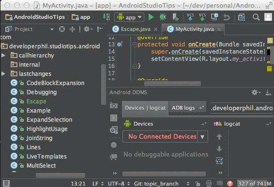
高亮一切（Hightlight All the Things）
- 描述：该操作将会高亮某个字符在当前文件中所有出现的地方。这不仅仅是简单的匹配，实际上它会分析当前的作用域，只高亮相关的部分。
- 调用：Menu → Edit → Find → Highlight Usages in File；
- 定位到上一处/下一处：Menu → Edit → Find → Find Next/Previous；
- 快捷键：相关快捷键请在菜单中查看；
- 更多：
- 如果高亮一个方法的return或throw语句，将会高亮这个方法的所有出口/结束点；
- 如果高亮某个类定义处的extend或implements语句，将会高亮继承的或实现的方法；
- 高亮一个import语句也会高亮使用到的地方；
- 按下Esc可以退出高亮模式；

回到上一个工具窗口（Jump to Last Tool Window）
- 描述：有时候你会从某个工具窗口跳到编辑器里面，然后又需要重新回到刚才操作的那个工具窗，比如你查找使用情况的时，使用该操作可以在不使用鼠标的情况下跳转到之前的工具窗口。
- 快捷键：F12

上一个编辑位置（Last Edit Location）
- 描述：该操作将使得你导航到上一处你改动过的地方，这与点击工具栏上的返回箭头回到上一个定位位置是不一样的，该操作将会返回到上一个编辑的位置。
- 快捷键：
- OS X:
Cmd + Shift + Delete - Windows/Linux:
Ctrl + Shift + Backspace
- OS X:

在方法和内部类之间跳转（Move Between Methods and Inner Classes）
- 描述：该操作让光标在当前文件的方法或内部类的名字间跳转。
- 调用：Navigate → Next Method/Previous Method;
- 快捷键：
- OS X:
Ctrl + Up/Down - Windows/Linux:
Alt + Up/Down
- OS X:

定位到嵌套文件（Navigate to Nested File）
- 描述：有时你有一堆存放在不同目录下的同名文件，例如不同模块下的AndroidManifest.xml文件，当你想定位到其中的一个文件，你会得到一堆搜索结果，你还得辨认哪个才是你需要的。通过在检索框中输入部分路径的前缀，并添加斜杠号，你就可以在第一次尝试的时候就找到正确的那个。
- 快捷键：
- OS X：
Shift + Cmd + O - Windows/Linux:
Shift + Ctrl + N
- OS X：
定位到父类（Navigate to parent）
- 描述：如果光标是在一个继承父类重写的方法里，这个操作将定位到父类实现的地方。如果光标是在类名上，则定位到父类类名。
- Menu → Navigate → Super Class/Method
- 快捷键：
- OS X:
Cmd + U - Windows/Linux:
Ctrl + U
- OS X:

根据编号打开面板（Open a Panel by Its Number）
- 描述：你可能已经注意到某些面板的名称左边有一个数字，这里有个快捷操作可以打开它们。如果你没看到面板的名称，请点击IDE的左下角的切换按钮。
- 快捷键：
- OS X:
Cmd + 数字 - Windows/Linux:
Alt + 数字
- OS X:

在外部打开文件（Open File Externally）
- 描述：通过这个快捷键，简单地点击 Tab，就可以打开当前文件所在的位置或者该文件的任意上层路径。
- 快捷键：
- OS X:
Cmd + 单击Tab - Windows/Linux:
Ctrl + 点击Tab
- OS X:

参数信息（Parameter Info）
- 描述：这个操作将显示和你在方法声明处写一样的参数列表，当你想看某个存在的方法的参数，这是一个很有用的操作。光标下的参数显示为黄色，如果没有参数显示黄色，意味着你的方法调用是无效的，很可能是某个参数分配不对。（例如一个浮点数赋值给了整型参数）。如果你正在写一个方法调用，突然离开编辑的地方，再返回的时候，输入一个逗号，就可以重新触发参数信息。
- 快捷键：
- OS X:
Cmd + P - Windows/Linux:
Ctrl + P
- OS X:

快速查看定义（Quick Definition Lookup）
- 描述：你曾经是否想查看一个方法或者类的具体实现，但是不想离开当前界面？ 该操作可以帮你搞定。
- 快捷键：
- OS X:
Alt + Space / Cmd + Y - Windows/Linux:
Ctrl + Shift + I
- OS X:
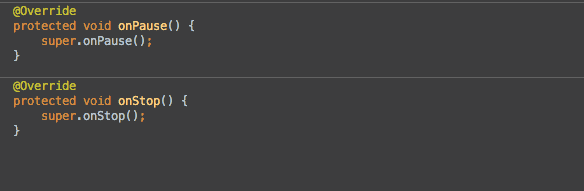
最近修改的文件（Recently Changed Files）
- 描述：该操作类似于“最近访问（Recents）”弹窗，会显示最近本地修改过的文件列表，根据修改时间排列。可以输入字符来过滤列表结果。
- 快捷键：
- OS X:
Cmd + Shift + E - Windows/Linux:
Ctrl + Shift + E
- OS X:

最近访问（Recents）
- 描述：该操作可以得到一个最近访问文件的可搜索的列表。
- 快捷键：
- OS X:
Cmd + E - Windows/Linux:
Ctrl + E
- OS X:
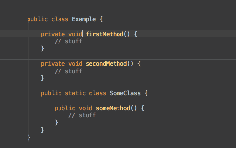
相关文件（Related File）
- 描述：该操作有助于在布局文件和Activity/Fragment之间轻松跳转。这也是一个快捷操作，在类名/布局顶端的左侧。
- 快捷键：
- OS X:
Ctrl + Cmd + Up - Windows/Linux:
Ctrl + Alt + Home
- OS X:

返回到编辑器（Return to the Editor）
- 描述：一大堆快捷键操作会把你从编辑器带走（type hierarchy, find usages, 等等）。如果你想返回到编辑器，你有两个选项：
Esc：该操作仅仅把光标移回编辑器。Shift + Esc：该操作会关闭当前面板，然后把光标移回到编辑器。
- 快捷键：
- 返回但保留打开的面板：
Esc - 关闭面板并返回：
Shift + Esc
- 返回但保留打开的面板：

Select In
- 描述：拿着当前文件然后问你在哪里选中该文件。恕我直言，最有用的就是在项目结构或者资源管理器中打开该文件。每一个操作都有数字或者字母作为前缀，可以通过这个前缀来快速跳转。通常，我会 Alt + F1 然后 回车(Enter) 来打开项目视图，然后 再用 Alt + F1 在OS X的Finder里找到文件。你可以在文件中或者直接在项目视图里使用该操作。
- 快捷键：
Alt + F1

扩大/缩小选择（Extend/Shrink Selection）
- 描述：该操作会在上下文逐渐扩大/缩小当前选择范围。例如，它会先选中当前变量，再选中当前语句，然后选中整个方法，缩小选择则相反。
- 快捷键：
- OS X:
Alt + 上/下 - Windows、Linux:
Ctrl+W / Ctrl + Shift + W
- OS X:

Sublime Text式的多处选择（Sublime Text Multi Selection）
- 描述：这个功能超级赞！该操作会识别当前选中字符串，选择下一个同样的字符串，并且添加一个光标。这意味着你可以在同一个文件里拥有多个光标，你可以同时在所有光标处输入任何东西。
- 快捷键：
- OS X:
Ctrl + G - Windows、Linux:
Alt + Ｊ
- OS X:

文件结构弹窗（The File Structure Popup）
- 描述：该操作可以展示当前类的大纲，并且可以快速跳转。你还可以通过键盘输入来过滤结果。这是一种很高效的方法来跳转到指定方法。
- 更多：
- 你在输入字符的时候可以用驼峰风格来过滤选项。比如输入”oCr”会找到”onCreate”
- 你可以通过勾选多选框来决定是否显示匿名类。这在某些情况下很有用，比如你想直接跳转到一个OnClickListener的onClick方法。
- 快捷键：
- OS X:
Cmd + F12 - Windows/Linux:
Ctrl + F12
- OS X:
- 调用：Menu → Navigate → File Structure

切换器（The Switcher）
- 描述：该快捷键基本上就是IDE的alt+tab/cmd+tab命令。你可以用它在导航tab或者面板切换。一旦打开这个窗口，只要一直按着ctrl键，你可以通过对应的数字或者字母快捷键快速选择。你也可以通过backspace键来关闭一个已选中的tab或者面板。
- 快捷键：
Ctrl + Tab

版本控制操作弹窗（VCS Operations Popup）
- 描述：该操作会给你显示最常用的版本控制操作。如果你的项目没有用git等版本控制软件进行管理，它至少会给你提供一个由IDE维护的本地历史记录。
- 快捷键：
- OS X:
Ctrl + V - Windows/Linux:
Alt + 引号
- OS X:

编码技巧
列选择/块选择（Column Selection）
- 描述：正常选择时，当你向下选择时，会直接将当前行到行尾都选中，而块选择模式下，则是根据鼠标选中的矩形区域来选择。
- 调用：按住Alt，然后拖动鼠标选择。
- 开启/关闭块选择：Menu → Edit → Column Selection Mode
- 快捷键：切换块选择模式：
- OS X：
Cmd + Shift + 8 - Windows/Linux:
Shift + Alt + Insert
- OS X：

语句补全（Complete Statement）
- 描述：这个方法将会生成缺失的代码来补全语句，常用的使用场景如下：
- 在行末添加一个分号，即使光标不在行末；
- 为if、while、for 语句生成圆括号和大括号；
- 方法声明后，添加大括号；
- 调用：Menu → Edit → Compelete Current Statement
- 快捷键：
- OS X:
Cmd + Shift + Enter - Windows/Linux:
Ctrl + Shift + Enter
- OS X:
- 更多：如果一个语句已经补全，当你执行该操作时，则会直接跳到下一行，即使光标不在当前行的行末。

删除行（Delete Line）
- 描述：如果没选中，则删除光标所在行，如果选中，则会删除选中所在的所有行。
- 快捷键：
- OS X:
Cmd + Delete - Windows/Linux:
Ctrl + Y
- OS X:

行复制（Duplicate Line）
- 描述：复制当前行，并粘贴到下一行，这个操作不会影响剪贴板的内容。这个命令配合移动行快捷键非常有用。
- 快捷键：
- OS X:
Cmd + D - Windows/Linux:
Ctrl + D
- OS X:

编写正则表达式（Edit Regex）
- 描述：使用Java编写正则表达式是一件很困难的事，主要原因是：
- 你必须得避开反斜杠；
- 说实话，正则很难；
- 看第二条。
IDE能帮我们干点啥呢？当然是一个舒服的界面来编写和测试正则啦~
- 快捷键：Alt + Enter → check regexp
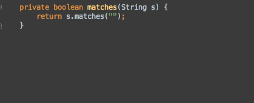
使用Enter和Tab进行代码补全的差别（Enter vs Tab for Code Completion）
- 描述：代码补全时，可以使用Enter或Tab来进行补全操作，但是两者是有差别的。
- 使用Enter时：从光标处插入补全的代码，对原来的代码不做任何操作。
- 使用Tab时：从光标处插入补全的代码，并删除后面的代码，直到遇到点号、圆括号、分号或空格为止。

提取方法（Extract Method）
- 描述：提取一段代码块，生成一个新的方法。当你发现某个方法里面过于复杂，需要将某一段代码提取成单独的方法时，该技巧是很有用的。
- 调用：Menu → Refactor → Extract → Method
- 快捷键：
- OS X:
Cmd + Alt + M - Windows/Linux:
Ctrl + Alt + M
- OS X:
- 更多：在提取代码的对话框，你可以更改方法的修饰符和参数的变量名。
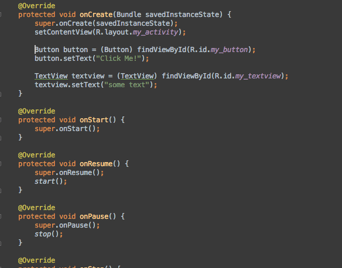
提取参数（Extract Parameter）
- 描述：这是一个提取参数的快捷操作。当你觉得可以通过提取参数来优化某个方法的时候，这个技巧将很有用。该操作会将当前值作为一个方法的参数，将旧的值放到方法调用的地方，作为传进来的参数。
- 调用：Menu → Refactor → Extract → Parameter
- 快捷键：
- OS X:
Cmd + Alt + P - Windows/Linux:
Ctrl + Alt + P
- OS X:
- 更多：通过勾选“delegate”，可以保持旧的方法，重载生成一个新方法。

提取变量（Extract Variable）
- 描述：这是一个提取变量的快捷操作。当你在没有写变量声明的直接写下值的时候，这是一个很方便生成变量声明的操作，同时还会给出一个建议的变量命名。
- 调用：Menu → Refactor → Extract → Variable
- 快捷键：
- OS X:
Cmd + Alt + V - Windows/Linux:
Ctrl + Alt + V
- OS X:
- 更多：当你需要改变变量声明的类型，例如使用 List 替代 ArrayList，可以按下Shift + Tab，就会显示所有可用的变量类型。
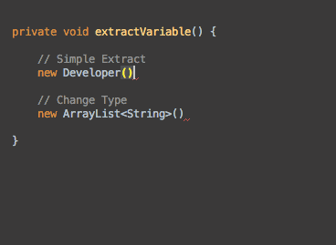
内置（Inline）
- 描述：当你开始对提取操作有点兴奋的时候，突然觉得东西太多了，怎么办呢？这是一个和提取相反的操作。该操作对方法、字段、参数和变量均有效。
- 调用：Menu → Refactor → Inline
- 快捷键：
- OS X:
Cmd + Alt + N - Windows/Linux:
Ctrl + Alt + N
- OS X:

合并行和文本（Join Lines and Literals）
- 描述：这个操作比起在行末使劲按删除键爽多了！该操作遵守格式化规则，同时：
- 合并两行注释，同时移除多余的//；
- 合并多行字符串，移除+和双引号；
- 合并字段的声明和初始化赋值；
- 快捷键：
Ctrl + Shift + J

动态模板（Live Templates）
- 描述：动态模板是一种快速插入代码片段的方法，使用动态模板比较有意思的是你可以使用合适的默认值将模板参数化，当你插入代码片段时，这可以指导你完成参数。
- 更多：如果你知道模板的缩写，就可以不必使用快捷键，只需要键入缩写并使用Tab键补全即可。
- 快捷键：
- OS X:
Cmd + J - Windows/Linux:
Ctrl + J
- OS X:

上下移动行（Move Lines Up Down）
- 描述：不需要复制粘贴就可以上下移动行了。
- 快捷键：
Alt + Shift + Up/Down

移动方法（Move Methods）
- 描述：这个操作和移动行操作很类似，不过该操作是应用于整个方法的，在不需要复制、粘贴的情况下，就可以将整个方法块移动到另一个方法的前面或后面。该操作的实际叫做“移动语句”，这意味着你可以移动任何类型的语句，你可以方便地调整字段或内部类的顺序。
- 快捷键：
- OS X:
Cmd + Alt + Up/Down - Windows/Linux:
Ctrl + Shift + Up/Down
- OS X:

取反补全（Negation Completion）
- 描述：有时你自动补全一个布尔值，然后回到该值的前面添加一个感叹号来完成取反操作，现在通过使用输入!代替enter完成补全操作，就可以跳过这些繁琐的操作了。
- 快捷键：代码补全的时候，按下!即可（有时需要上下键选中候选项）；

后缀补全（Postfix Completion）
- 描述：你可以认为该操作是一种代码补全，它会在点号之前生成代码，而不是在点号之后。实际上你调用这个操作和正常的代码补全操作一样：在一个表达式之后输入点号。
例如对一个列表进行遍历，你可以输入myList.for，然后按下Tab键，就会自动生成for循环代码。
-
调用： 你可以在某个表达式后面输入点号，出现一个候选列表，在常规的代码补全提示就可以看到一系列后缀补全关键字，同样的，你也可以在Editor → Postfix Completion中看到一系列后缀补全关键字。
-
常用的有后缀补全关键字有：
- .for (补全foreach语句)
- .format (使用String.format()包裹一个字符串)
- .cast (使用类型转化包裹一个表达式)
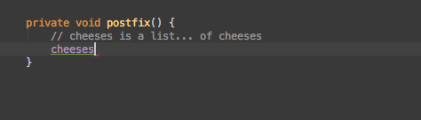
重构（Refactor This）
- 描述：该操作可以显示所有对当前选中项可行的重构方法。这个列表可以用数字序号快速选择。
- 快捷键：Ctrl + T(OS X)、Ctrl + Alt + Shift + T(Windows/Linux)

重命名（Rename）
- 描述：你可以通过该操作重命名变量、字段、方法、类、包。当然了，该操作会确保重命名对上下文有意义，不会无脑替换掉所有文件中的名字；
- 快捷键：
Shift + F6 - 更多：如果你忘记了这个快捷键，你可以使用快速修复（Quick Fix）的快捷键，它通常包含重命名选项。

分号/点 补全（Semicolon Dot Completion）
- 描述：代码补全这个功能太棒啦！我们大概都对以下这种情况很熟悉：开始输入点什么东西，接着从IDE得到一些建议的选项，然后通过Enter或者Tab来选择我们想要的补全代码。其实还有另外一种方法来选择补全的代码：我们可以输入一个点(.)或者一个分号(;)。这样就会完成补全，添加所选字符。这在结束一条语句补全或者快速链式调用方法的时候特别有用。
- 注意点：如果你要代码补全的方法需要参数，这些参数会被略过。
- 快捷键：
Autocomplete + “.” 或者 “;”

包裹代码（Surround With）
-
描述： 该操作可以用特定代码结构包裹住选中的代码块，通常是if语句，循环，try/catch语句或者runnable语句。 如果你没有选中任何东西，该操作会包裹当前一整行。
-
快捷键：
- OS X:
Cmd + Alt + T - Windows/Linux:
Ctrl + Alt + T
- OS X:
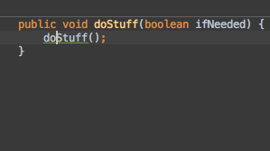
移除包裹代码（Unwrap Remove）
- 描述：该操作会移除周围的代码，它可能是一条if语句，一个while循环，一个try/catch语句甚至是一个runnable语句。该操作恰恰和包裹代码（Surround With）相反。
- 快捷键：
- OS X:
Cmd + Shift + Delete - Windows/Linux:
Ctrl + Shift + Delete
- OS X:

手动唤出自动补全（Class Name Completion）
- 描述：一般使用 Android Studio 的时候，自动提示会在你想要提示的时候自动出现，比如输入 Log. ，就出现 Log.d()、Log.e、Log.i() 等提示。不过如果在自动提示的时候手一抖选错的话，比如想选 Log.d() 结果选了 Log.e() ，你可能会把 .e() 都删掉，然后再输入一个 . ， 然后弹出自动补全提示。其实这时候只需要删除 e() 然后手动唤出自动补全即可。
- 快捷键：
- OS X/Windows/Linux:
Ctrl + Alt + Space(可能存在快捷键冲突无法唤出，修改下快捷键即可)
- OS X/Windows/Linux:

调试技巧
分析传入数据流（Analyze data flow to here）
- 描述：这个操作将会根据当前选中的变量、参数或者字段，分析出其传递到此处的路径。 当你进入某段陌生的代码，试图明白某个参数是怎么传递到此处的时候，这是一个非常有用的操作。
- 调用：Menu → Analyze → Analyze Data Flow to Here
- 快捷键：无，可以在设置中指定。
- 相反的操作：分析传出数据流（Analyze data flow from here），这个将会分析当前选中的变量往下传递的路径，直到结束。

堆栈追踪分析（Analyze Stacktrace）
- 描述： 这个操作读取一份堆栈追踪信息，并且使它像logcat中那样可以点击。当你从bug报告中或者终端复制了一份堆栈追踪，使用该操作可以很方便地调试。
- 调用：Menu → Analyze → Analyze Stacktrace
- 快捷键：无，可以在设置中指定。
- 更多：通过使用“ProGuard Unscramble Plugin”插件，也可以分析混淆过的堆栈追踪。

关联调试程序（Attach Debugger）
- 描述：随时启动调试程序，即使你没有以调试模式启动你的应用。这是一个很方便的操作，因为你不必为了调试程序而以调试模式重新部署你的应用。当别人正在测试应用，突然遇到一个bug而将设备交给你时，你也可以很快地进入调试模式。
- 调用：点击工具栏图标或者Menu → Build → Attach to Android Process
- 快捷键：无，可以在设置中指定，或者点击工具栏对应的图标。
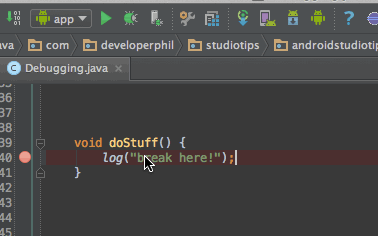
条件断点（Conditional Breakpoints）
- 描述：简单说，就是当设定的条件满足时，才会触发断点。你可以基于当前范围输入一个java布尔表达式，并且条件输入框内是支持代码补全的。
- 调用：右键需要填写表达式的断点，然后输入布尔表达式。
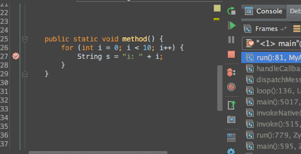
禁用断点（Disable Breakpoints）
- 这个操作将使得断点。当你有一个设置过复杂条件的断点或者是日志断点，当前不需要，但是下次又不用重新创建，该操作是很方便的。
- 调用：按住Alt，然后单击断点即可。

计算表达式（Evaluate Expression）
- 描述：这个操作可以用来查看变量的内容并且计算几乎任何有效的java表达式。需要注意的是，如果你修改了变量的状态，这个状态在你恢复代码执行后依然会保留。
- 快捷键：处在断点状态时，光标放在变量处，按Alt + F8，即可显示计算表达式对话框。

审查变量（Inspect Variable）
- 描述：该操作可以在不打开计算表达式对话框就能审查表达式的值。
- 快捷键：调试状态下，按住Alt键，然后单击表达式即可。

日志断点（Logging Breakpoints）
- 描述：这是一种打印日志而不是暂停的断点，当你想打印一些日志信息但是不想添加log代码后重新部署项目，这是一个非常有用的操作。
- 调用：在断点上右键，取消Suspend的勾选，然后勾选上Log evaluated Expression，并在输入框中输入你要打印的日志信息。

标记对象（Mark Object）
- 描述：当你在调试的时候，这个操作可以让你给某个特殊的对象添加一个标签，方便你后面很快地辨认。在调试时，当你从一堆相似的对象中查看某个对象是否和之前是一样的，这就是一个非常有用的操作。
- 调用：右键你需要标记的对象，选中Mark Object，输入标签；
- 快捷键：选中对象时
- OS X:
F3 - Windows/Linux:
F11
- OS X:
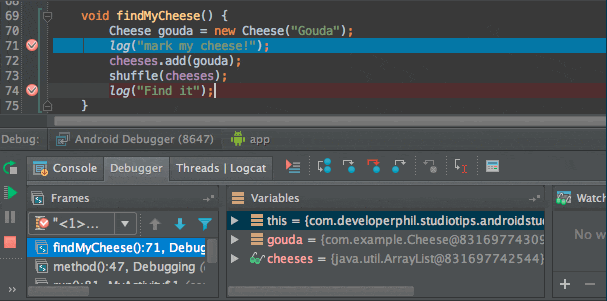
显示当前运行点（Show Execution Point）
- 描述：该操作会立刻把你的光标移回到当前debug处。
通常的情况是：
- 你在某处触发了断点
- 然后在文件中随意浏览
- 直接调用这个快捷键，快速返回之前逐步调试的地方。
- 快捷键：（Debug时)
Alt + F10；
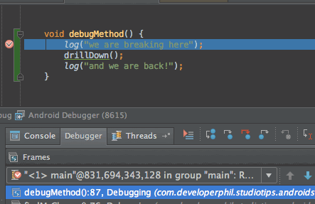
终止进程（Stop Process）
- 描述：该操作会终止当前正在运行的任务。如果任务数量大于一，则显示一个列表供你选择。在终止调试或者中止编译的时候特别有用！
- 快捷键：
- OS X:
Cmd + F2 - Windows、Linux:
Ctrl + F2
- OS X:

临时断点（Temporary Breakpoints）
- 描述：通过该操作可以添加一个断点，这个断点会在第一次被命中的时候自动移除。
- 快捷键：
- 鼠标:
Alt + 鼠标左键 点击代码左侧 - OS X:
Cmd + Alt + Shift + F8 - Windows/Linux:
Ctrl + Alt + Shift + F8
- 鼠标:

调用层级树弹窗（The Call Hierarchy Popup）
- 描述：该操作会给你展示 在一个方法的声明和调用之间所有可能的路径。
- 快捷键：
Ctrl + Alt + H
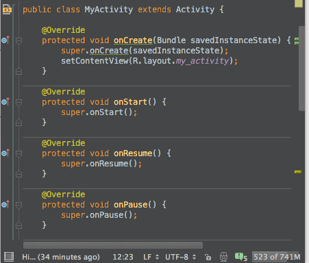
Copyright © 2015 Powered by MWeb, Theme used GitHub CSS.